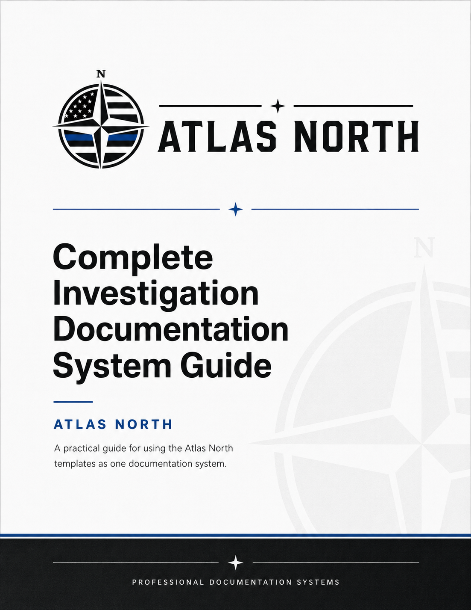

Complete Documentation Package
The full Atlas North collection in one bundle for buyers who want the whole system at once.
Library bundle
DOCX
Fillable PDF

Professional documentation systems
Atlas North bundles editable DOCX files, layout-preserved fillable PDFs, and completed fictional examples so buyers can understand the structure, tone, and level of detail expected from each form.
Featured package
The complete package brings together the entire Atlas North system in one place, making it easy to present the full product line to visitors, buyers, or partners.
Product library
The full Atlas North collection in one bundle for buyers who want the whole system at once.

A master reference for the documentation process, flow, and handoff structure.
Built for tracking case notes, evidence movement, and the details that keep a file organized.

A starter set for investigators who need a strong, repeatable paperwork foundation.

A practical documentation set for workplace incidents and administrative follow-up.

A structured pack for building standard operating procedures that are easy to reuse and update.

Documentation support for HR, management, and internal review workflows.
What buyers get
DOCX files that buyers can tailor to their own facts and workflow.
Layout-preserved PDFs built for form entry in compatible readers.
Finished fictional examples that show the intended tone and depth.
Clean cover art for product pages, listings, and launch materials.
Important note
The completed examples included in the Atlas North package are fictional and intended only as orientation. Buyers should replace example facts with verified information and follow the policies, licensing rules, and legal requirements that apply to their own use.